Courses › Human Anatomy › Module 4
Human Anatomy · 6111
Module 4 — Knee, Lower Leg, Ankle & Foot — Skeletal System
Topics: 4.1 Knee Osteology & Joints • 4.2 Knee Ligaments • 4.3 Menisci & Bursae • 4.4 Lower Leg, Ankle & Foot Bones and Joints • 4.5 Ligaments & Arches
📖 How to Use These Notes
- Best used with the lecture playing — keep these open, follow along, and add your own notes as you watch
- Lecture banners mark the start of each topic and run in the same order as the videos
- 🎙 Callouts = direct insights from the instructor's transcript
- ★ Tips = exam-relevant content or things the instructor told you to prepare
- Figures are taken directly from the module's slide decks
- Each topic ends with its own Quick-Reference Glossary
- Written from last year's recordings — if a lecture has been re-recorded or resequenced, Canvas wins
- Watch Dr. Litmer's lecture videos in your own Canvas module — video links are cohort-specific
- Quiz #2 covers Modules 3 AND 4 together: 20 questions, 30 minutes, Respondus LockDown Browser + webcam
- Canvas framing: knee + ankle = ~80% of US sports injuries, mostly ligamentous — this module is why you'll understand them
TOPIC 4.1
Knee Osteology & Joints
1. The Patellofemoral Joint
- Posterior patellar facets articulate with the femur's trochlear (patellar) surface — a plane joint: surfaces slide past each other, no roll-and-glide. Jobs: guide quadriceps force, cut friction in the quad mechanism as it bends over the knee, and manage capsular tension.
- Patellar landmarks: base superior (quadriceps tendon inserts), apex inferior (patellar tendon/ligament → tibial tuberosity); smooth anterior surface (with a bursa); posterior ridge between a broad, shallow LATERAL facet and a sharply angled MEDIAL facet. It's a sesamoid — bone laid down inside the quad tendon around age 2–3 in response to friction.
⚕ Why patellas dislocate LATERALLY
- The medial femoral condyle is larger and projects further anteriorly — a wall blocking medial travel.
- The lateral trochlea is broader and flatter — the low fence the patella can jump with a lateral force vector.
- The medial patellofemoral ligament (Topic 4.2) is the ligamentous check on exactly this.
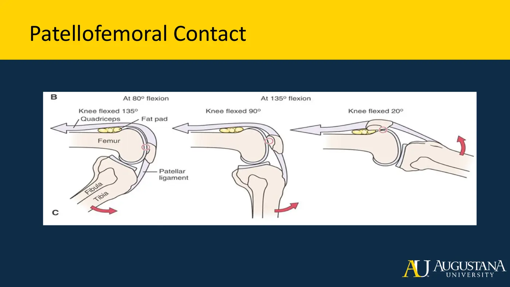
2. The Tibiofemoral Joint
- Medial + lateral femoral condyles on the tibial plateaus: a synovial hinge — primarily uniaxial flexion/extension with a few degrees of rotation, including the screw-home mechanism that locks the extended knee. Innervation from femoral (anterior), tibial + common fibular (posterior), and the obturator's posterior division (medial).
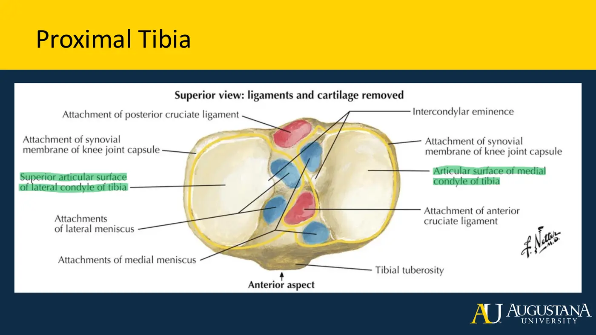
| Landmark | Why it matters |
|---|---|
| Femoral epicondyles (med/lat) | Collateral-ligament and muscle attachments, just above the condyles |
| Intercondylar fossa | Posterior gap between condyles — cruciate ligament territory |
| Trochlear/intercondylar groove | Anterior, contiguous surface where the patella tracks |
| Tibial plateaus | The (nearly flat) articular surfaces — congruity comes from the menisci |
| Intercondylar eminence + tubercles | Ligament and meniscal anchor points between the plateaus |
| Tibial tuberosity | Patellar ligament insertion |
| Gerdy's (ITB) tubercle | The IT band's distal anchor, anterolateral tibia |
Topic 4.1 — Quick-Reference Glossary
| Term | Definition |
|---|---|
| Plane joint | Slide-past surfaces, no axis — patellofemoral, tib-fib, TMT joints |
| Sesamoid | Bone grown inside a tendon — the patella is the biggest |
| Medial vs lateral facet | Sharp + walled-in vs broad + shallow — the dislocation asymmetry |
| Screw-home mechanism | Tiny rotation that locks the extending knee |
| Intercondylar fossa / eminence | Femoral notch / tibial spine — cruciate anchor country |
TOPIC 4.2
Knee Ligaments
- The capsule has a fibrous outer layer (continuous with neighboring tendons) and a synovial inner membrane (lubrication + cartilage nutrition). Sorting rule: ACL and PCL are INTRAcapsular; everything else is EXTRAcapsular.
1. The Patellar Group and Friends
| Structure | Know this |
|---|---|
| Patellar tendon/ligament | Apex → tibial tuberosity — bone-to-bone, so technically a ligament. Transmits quad force and creates the fulcrum/pulley that makes knee extension efficient |
| Adolescent apophysitis | Traction at its ends before growth plates close: Osgood-Schlatter at the tibial tuberosity; Sinding-Larsen-Johansson at the inferior patellar pole |
| Medial patellar plica | Embryonic remnant band behind the medial patella — a possible medial knee pain generator |
| Infrapatellar fat pad | Proprioceptive (pressurized at end-range) AND a major pain source: in Dye's famous no-anesthesia self-arthroscopy (1998), poking the posterior patellar cartilage produced NO pain — the fat pad was the only structure producing severe pain |
| Patellar retinacula | Medial (vastus medialis) + lateral (vastus lateralis) extensions — prevent patellar tilt |
| ITB | Iliac crest + glute max/TFL aponeurosis → Gerdy's tubercle; stabilizes hip AND knee. Clinical trio: Trendelenburg gait, trochanteric bursitis, ITB friction syndrome |
| MPFL | Medial retinaculum → medial femoral condyle — the primary check on lateral patellar dislocation |
| Oblique + arcuate popliteal ligs. | Posterior capsule reinforcement; resist hyperextension |
| Anterolateral ligament (ALL) | Confirmed only in 2013! Lateral femoral condyle → anterolateral tibia; restrains rotation in varus. Segond fracture = avulsion at its insertion — highly associated with ACL rupture |
2. The Cruciates
- They form the cross: primary restraint anterior-posterior, secondary restraint for rotation and frontal-plane stress; they guide arthrokinematics and resist end-range. The PCL is thicker (larger cross-section) and therefore stronger.
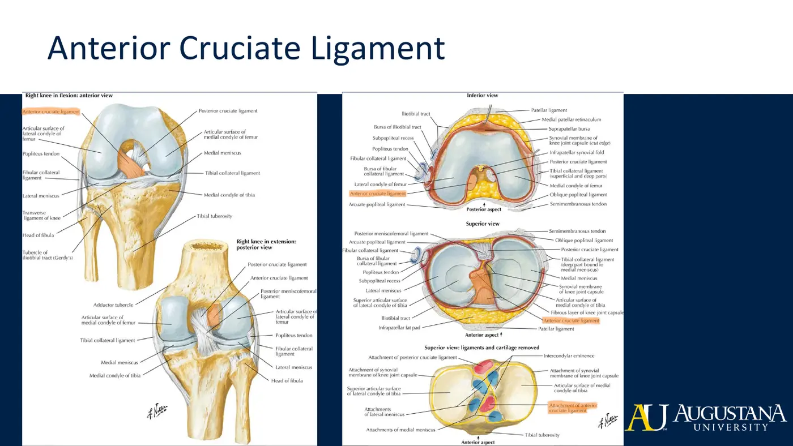
| ACL | PCL |
|---|---|
| Anterior intercondylar area (blending with the lateral meniscus' anterior horn — why ACL tears take menisci with them) → under the transverse ligament → medial surface of the LATERAL femoral condyle | Posterior intercondylar area → anterior part of the lateral surface of the MEDIAL femoral condyle |
| Prevents anterior tibial translation + hyperextension | Prevents posterior tibial translation + hyperflexion; carries most of the posterior restraint at 30–90° flexion |
| Bundles: big posterolateral = taut EXTENDED; small anteromedial = taut FLEXED + IR | Bundles: big anterolateral = taut FLEXED; small posteromedial = taut EXTENDED |
3. The Collaterals
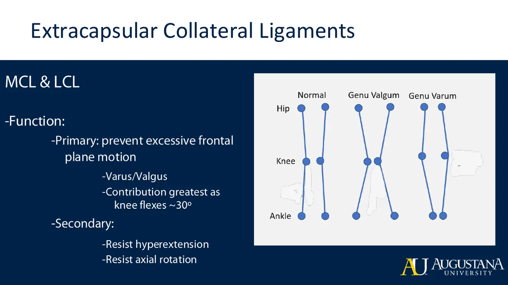
| Ligament | Path | Resists | Details |
|---|---|---|---|
| MCL (tibial) | Medial femoral epicondyle → superficial fibers to medial tibial shaft; deep fibers to medial tibial condyle, blending with the medial meniscus + capsule | VALGUS + lateral tibial rotation | Two parts split by a bursa; restraint grows to ~25° flexion (≈57% at 5° → 78% at 25°); rich blood supply = real self-healing potential; the meniscus blend = concurrent injuries |
| LCL (fibular) | Lateral femoral epicondyle → fibular head; cord-like and easy to palpate; popliteus tendon runs deep to it | VARUS | ≈55% of varus load at 5°, 69% at 25°; posterolateral corner backup: popliteofibular lig., arcuate, lateral capsule + dynamic help from biceps femoris and the ITB |
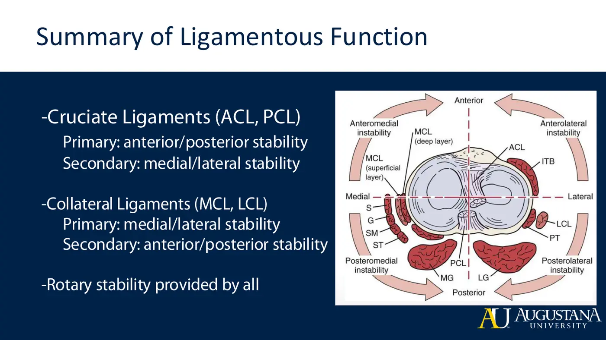
Topic 4.2 — Quick-Reference Glossary
| Term | Definition |
|---|---|
| Intra- vs extracapsular | ACL + PCL inside; everything else outside |
| Osgood-Schlatter / Sinding-Larsen-Johansson | Tibial-tuberosity vs inferior-patellar-pole apophysitis |
| Infrapatellar fat pad | The anterior-knee pain generator (Dye 1998) |
| MPFL | The medial leash against lateral patellar dislocation |
| ALL + Segond fracture | 2013-confirmed rotational restraint; its avulsion rides with ACL tears |
| ACL vs PCL insertions | Medial wall of LATERAL condyle vs lateral wall of MEDIAL condyle |
| Bundle rule | Named bundles trade tautness across flexion-extension |
| Varus/valgus vs varum/valgum | One limb vs both limbs |
| MCL healing advantage | Rich blood supply — unlike the avascular structures nearby |
TOPIC 4.3
Knee Menisci & Bursae
1. Menisci: Structure and Load
- Jobs: disperse weight-bearing force, cushion, create congruity (round condyles on a flat plateau), protect cartilage and subchondral bone, feed cartilage by passive diffusion, help limit hyperextension, smooth the glide.
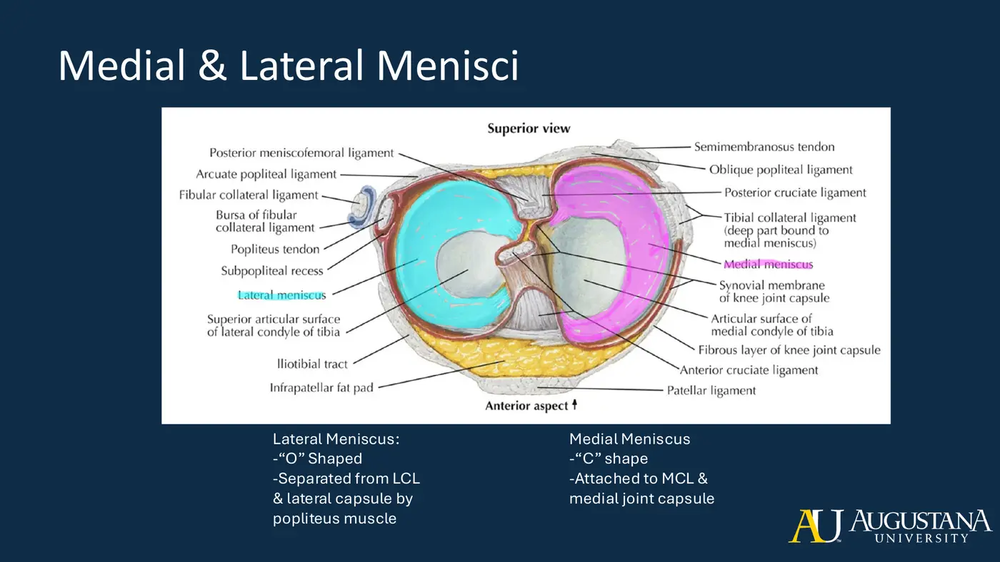
| Lateral meniscus | Medial meniscus |
|---|---|
| O-shaped | C-shaped |
| Separated from the LCL by capsule and popliteus → more mobile | Blended into the MCL (+ posterior oblique ligament) → less mobile → more often injured, and injured together with the MCL |
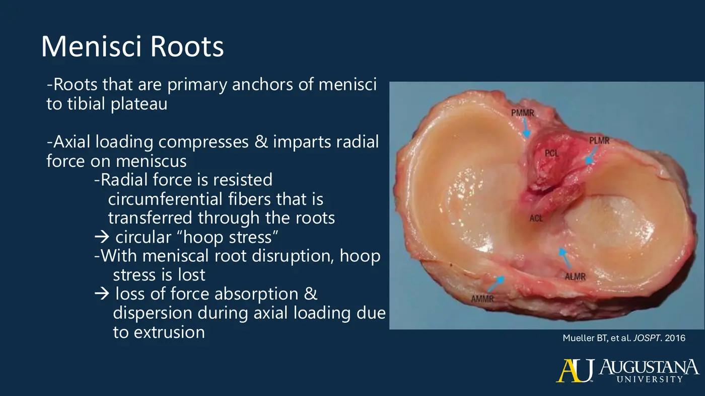
- Hoop-stress mechanics: axial load squeezes the wedge outward; circumferential fibers (the tire around the radial spokes) catch that radial force and pull on the four roots anchoring the horns to the plateau. Tear a root or rip the hoop → force absorption lost → meniscal extrusion.
- Vascular zones decide healing: red-red outer third (capillary supply — can heal) → red-white → white-white inner third (avascular, diffusion-fed — poor healing). The popliteus separates the posterolateral corner from its supply, so posterior root tears heal poorly. Menisci carry mechanoreceptors, and they FOLLOW THE TIBIA — anterior in extension, posterior in flexion, rotating with the tibia.
2. Bursae of the Knee
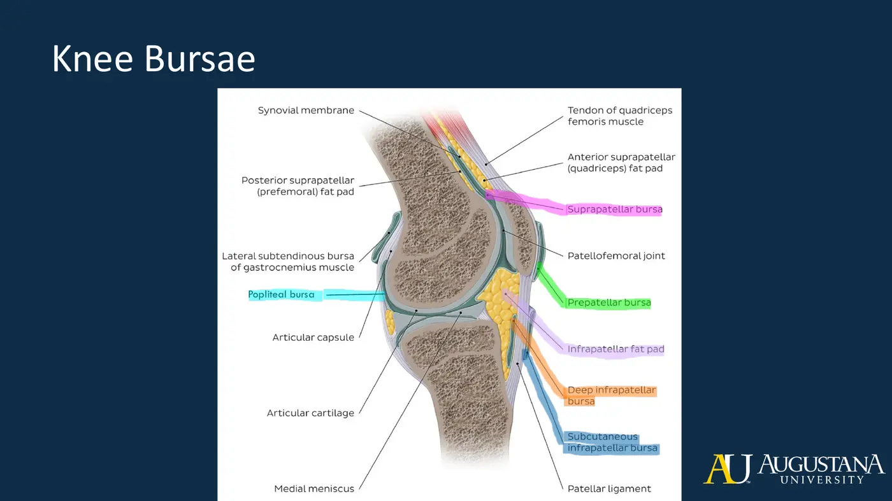
| Bursa | Lies between | Clinical hook |
|---|---|---|
| Suprapatellar | Femur × quadriceps | — |
| Prepatellar | Patella × skin | “Housemaid's knee” territory |
| Deep infrapatellar | Patellar ligament × tibia | — |
| Subcutaneous infrapatellar | Patellar ligament × skin | — |
| Popliteal | Posterolateral capsule expansion | Baker's cyst: arthritis or a meniscal tear over-produces fluid → posterior bulge + tightness |
| Pes anserine | SGT tendons × tibia | Common medial tenderness site |
📺 Required resources — Topics 4.1–4.3
Topic 4.3 — Quick-Reference Glossary
| Term | Definition |
|---|---|
| Hoop stress | Circumferential fibers resisting radial squeeze — the meniscus' whole trick |
| Roots | Four anchors to the plateau; root tear = extrusion |
| Red-red / red-white / white-white | Vascular → avascular zones = healing gradient |
| Menisci follow the tibia | Anterior in extension, posterior in flexion |
| Meniscectomy cascade | Less contact area → more stress → OA |
| Baker's cyst | Popliteal-bursa cyst from intra-articular overproduction |
TOPIC 4.4
Lower Leg, Ankle & Foot: Bones and Joints
1. The Tibiofibular Joints and the Mortise
- Proximal tib-fib (lateral tibial condyle × fibular head) and distal tib-fib (fibular notch of tibia × fibula): both synovial plane joints — glide only, no axis — moving reciprocally with ankle motion. The common fibular nerve wraps the fibular head/neck (remember it when you see that bone). The full-length interosseous membrane is the primary stabilizer.
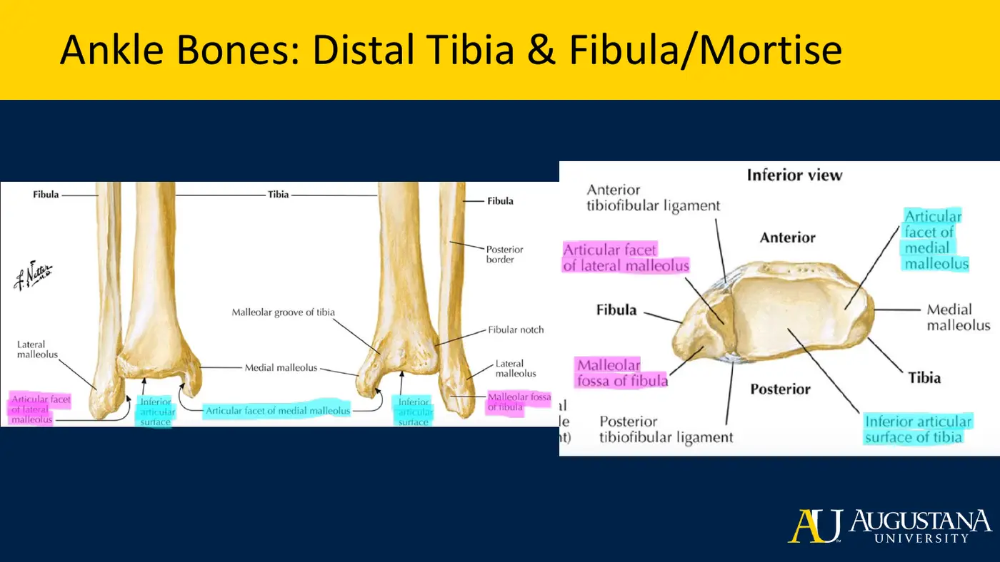
⚕ Clinical Spotlight — High Ankle Sprain
- The talar trochlea is wider anteriorly: dorsiflexion wedges the wide part in and spreads the mortise (normal); plantarflexion narrows it.
- In maximal DF (close-packed) + a forced external-rotation load, the spread goes too far → anterior tibiofibular ligament + syndesmosis injury = the high ankle sprain.
- Talocrural joint: the mortise (lateral malleolus = lateral wall; distal tibia + medial malleolus = roof and medial wall) grips the talus so snugly that medial-lateral motion is blocked → a true uniaxial hinge: dorsiflexion and plantarflexion.
2. The Foot: 26 Bones in Three Regions
- Rearfoot = talus + calcaneus. Midfoot = navicular, three cuneiforms, cuboid. Forefoot = metatarsals + phalanges. Talus articulates up (mortise), forward (navicular via its head), and down (three facets → calcaneus). Calcaneus = the largest foot bone: weight bearing, force transmission, the calcaneal tuberosity (posterior-compartment muscles; plantar fascia at its medial process) and the sustentaculum tali (spring ligament + deltoid country).
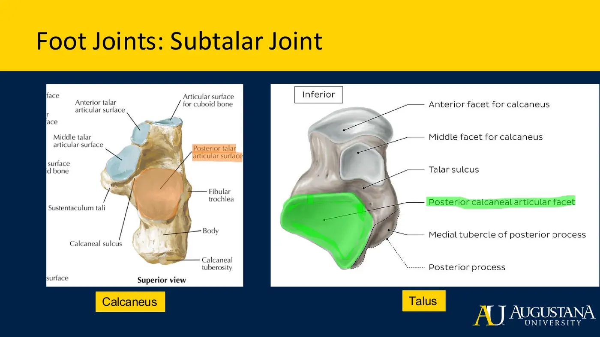
- Subtalar joint = talus × calcaneus across three facets → triplanar motion: DF/PF + inversion/eversion + ab/adduction happening together as a gliding twist. (MSK2 builds on this.)
| Joint | Type | Motion |
|---|---|---|
| Transverse tarsal (Chopart's) = talonavicular + calcaneocuboid | Both synovial saddle | Biaxial → midfoot pronation/supination |
| Intertarsal set (cuneonavicular, intercuneiform, cuneocuboid, ± cuboideonavicular) | Plane | Slide/glide contributions |
| Tarsometatarsal (Lisfranc) | Plane | MT1×medial, MT2×intermediate, MT3×lateral cuneiform; MT4-5×cuboid; flexion/extension glides + ab/adduction referenced to MT2 |
| Metatarsophalangeal (MTP) | Condyloid | Biaxial: flex/ext + ab/adduction → circumduction |
| IP / PIP / DIP | Hinge | Sagittal flexion/extension only (great toe has one IP; digits 2–5 have PIP + DIP) |
- Clinical spotlights: Lisfranc sprain/fracture — high-force awkward twist (football, soccer) at the TMT line; hallux valgus (bunion) — MT1 drifts into abduction while tendon pull adducts the phalanges, bowstringing MTP1.
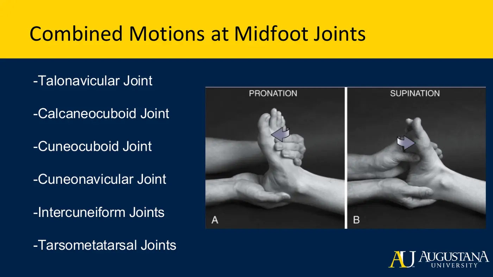
Topic 4.4 — Quick-Reference Glossary
| Term | Definition |
|---|---|
| Mortise | Tibia + both malleoli — the socket that makes the ankle a hinge |
| Wide-anterior talus | The reason DF spreads the tib-fib and packs the joint |
| Triplanar subtalar motion | DF/PF + inv/ev + ab/add as one twist |
| Chopart's / Lisfranc | Transverse tarsal line / tarsometatarsal line |
| MT2 reference | The foot's midline for ab/adduction naming |
| Condyloid MTP | Biaxial toe joints; IPs are pure hinges |
| Sustentaculum tali | Calcaneal shelf anchoring spring-ligament + deltoid fibers |
TOPIC 4.5
Ligaments of the Lower Leg, Ankle & Foot — and the Arches
1. Ankle Collaterals: The Sprain Ligaments
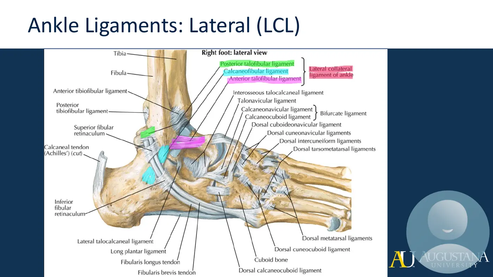
| Lateral ligament | Path | Position behavior |
|---|---|---|
| ATFL | Anterior margin of lateral malleolus → talar neck | Taut in plantarflexion — and weak: the classic inversion-sprain ligament (pointed foot + inversion force) |
| CFL | Below the lateral malleolus → lateral calcaneus | Taut in dorsiflexion — takes the inversion load there; shares fiber orientation with the inferior fibular retinaculum → combined injuries + peroneal tendon snapping |
| PTFL | Posterior lateral malleolus → lateral tubercle of the posterior talar process | Horizontal; restrains inversion in dorsiflexed positions |
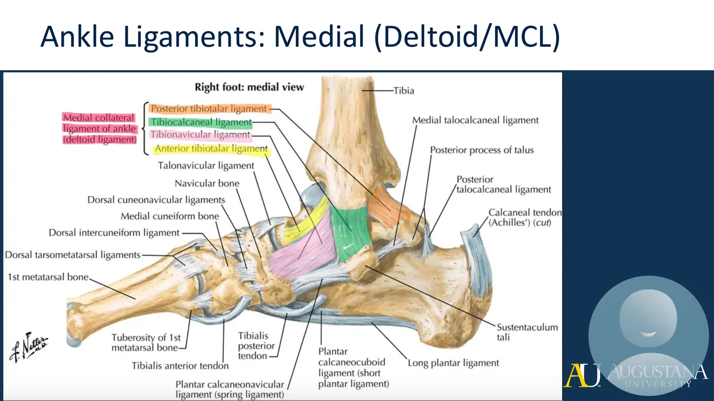
- Deltoid/MCL of the ankle — four self-naming parts from the medial malleolus: anterior tibiotalar, tibionavicular (crosses subtalar AND talonavicular), tibiocalcaneal (→ sustentaculum tali), posterior tibiotalar. Resists EVERSION — and eversion sprains are rare because the deltoid is big and the fibula extends further distally, bone-blocking the motion.
- Subtalar ligaments (medial/lateral talocalcaneal, interosseous in the sulci, cervical) lock the subtalar down. Sinus tarsi syndrome: after lateral sprains (weak ATFL → interosseous/cervical injury) instability + synovitis/fibrosis fill the sinus tarsi; also a compression problem in flat, pronated feet.
2. Foot Ligaments
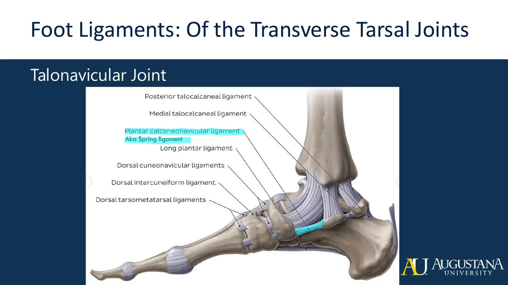
| Region | Key ligaments | Point |
|---|---|---|
| Calcaneocuboid | Bifurcate (Y-shaped), long plantar (→ MT2–4 bases), short plantar (deep) | Dorsal + plantar restraint of the lateral column |
| Talonavicular | Spring ligament (sustentaculum tali → plantar navicular) + dorsal talonavicular | The medial arch's keystone cable — its stretching stages posterior tibial tendinopathy; progression drags in the deltoid |
| TMT / Lisfranc | Dorsal + plantar TMT, collateral TMT | Restrain flexion/extension glides and drift toward MT2 |
| MTP | Plantar ligaments, deep transverse metatarsal, collaterals | Restrain extension, splay, and ab/adduction respectively. Turf toe = forced MTP1 hyperextension tearing the plantar structures |
| IP | Plantar + collateral | Same logic, hinge-scale |
3. The Arches
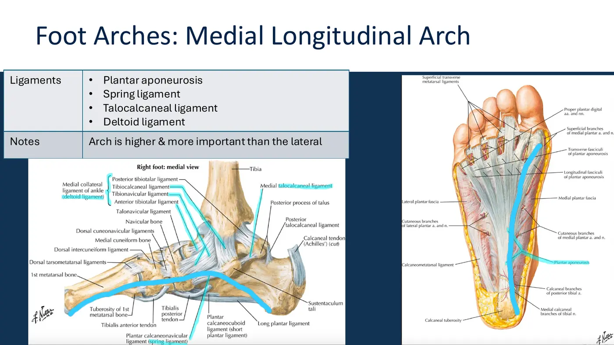
| Arch | Bones (keystone) | Support |
|---|---|---|
| Medial longitudinal | Calcaneus-navicular-medial cuneiform-MT1 (keystone: navicular/medial cuneiform) | Plantar aponeurosis (superficial tie-rod), spring ligament, talocalcaneal ligament, deltoid (checks eversion). Forms ~ages 6–10. Higher + more important — the rigid lever of propulsion |
| Lateral longitudinal | Calcaneus-cuboid-MT5 (keystone: cuboid) | Plantar aponeurosis + long and short plantar ligaments; flatter by design |
| Transverse | Cuneiforms + cuboid + metatarsal bases (peak: intermediate/lateral cuneiforms) | Intercuneiform + intertarsal ligaments |
- Strut mechanics: load spreads the arch's struts; the plantar fascia tensions like a tie-rod and absorbs the force.
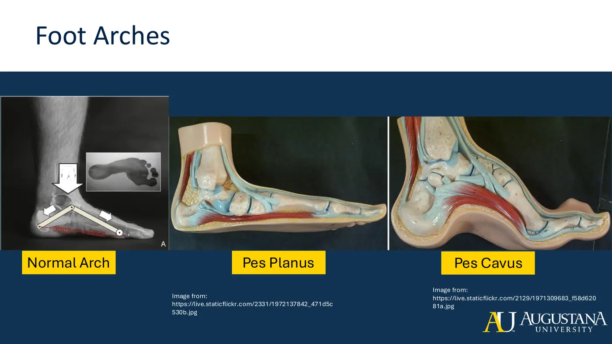
| Pes planus (flat) | Pes cavus (high) |
|---|---|
| Plantar structures stretched out; arch stuck pronated | Arch fixed high; can't lower on loading |
| Can't re-raise → poor rigid-lever propulsion | Can't spread the struts → poor pressure absorption |
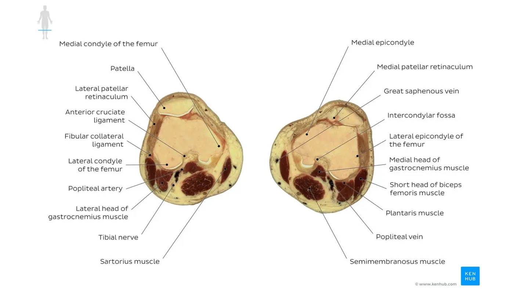
📺 Required resources — Topics 4.4–4.5
Topic 4.5 — Quick-Reference Glossary
| Term | Definition |
|---|---|
| ATFL rule | Weak + taut in plantarflexion = the inversion-sprain ligament |
| CFL / PTFL | The dorsiflexed-position inversion restraints |
| Deltoid four | Anterior tibiotalar, tibionavicular, tibiocalcaneal, posterior tibiotalar |
| Sinus tarsi syndrome | Post-sprain instability/fibrosis — or pronation compression |
| Bifurcate ligament | The Y from calcaneus to cuboid + navicular |
| Spring ligament | Plantar calcaneonavicular — the medial arch's staging indicator |
| Turf toe | MTP1 hyperextension plantar injury |
| Strut + tie-rod | Arch bones spread; plantar fascia tensions and absorbs |
| Pes planus vs cavus | Stuck pronated vs fixed high — both lose adaptability |
SYNC SESSION
Knee, Lower Leg & Foot — Applied
The sync session works through the knee and ankle/foot skeletal and connective structures hands-on (the during-sync and post-sync handouts are in this course's folders in this Drive).
✅ Module 4 assessment
- Quiz #2 — covers Modules 3 AND 4 together
- 20 questions · 30-minute limit · Respondus LockDown Browser + webcam required
- Check your own Canvas for the due date